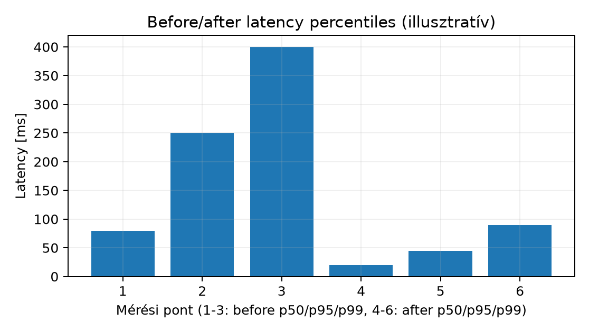

Egy Linux szolgáltatás lassulását gyakran egyszerre több réteg magyarázza: a processz CPU-ideje, a fájl-leírók száma, a memória-allokáció és a blokk-I/O kölcsönhatásban áll. Aki csak egyetlen metrikát néz, például a CPU-kihasználtságot, könnyen tüneti javítást végez: erősebb vCPU-t kér, pedig a valódi ok a kód erőforrás-életciklus hibája. A d109-ben tárgyalt réteghatárok és félrevezető metrikák után itt a cél egy teljes diagnosztikai labor, amelyben a tanuló korrelált process/service/host adatokból gyökérokot (root cause) és hozzájáruló tényezőt (contributing factor) azonosít, a javítást egyetlen változón keresztül hajtja végre, és ugyanazzal a workloaddal ellenőrzi a hatást.
A root cause az a kiváltó hiba, amely megszüntetése
a tünetet reprodukálhatóan eltünteti. A contributing
factor olyan rendszer- vagy környezeti feltétel, amely
önmagában nem okozná a tünetet, de felerősíti a hatást, vagy lassabbá
teszi az észlelést. Például egy fájl-leíró (file descriptor, FD)
szivárgás root cause-a a hibás C++ erőforrás-életciklus, míg a low
ulimit -n érték contributing factor.
A controlled bottleneck fixture egy olyan
paraméterezett workload, amely véges, reprodukálható terhelést ad le, és
a mérés alatt ismert módon telíti az egyik erőforrást. A laborban a
lab_bench kliens fix számú HTTP-kérést küld, rögzített
concurrency mellett.
A counter és stack trace együtt elv azt jelenti,
hogy a kernel számlálói (pl. min_flt, fd_nr,
%sys) és a processz veremnyoma (stack trace) együtt adnak
bizonyítékot. A számláló megmutatja, mi nő, a stack trace
megmutatja, hol keletkezik.
A one-change experiment (egyváltozós kísérlet) során egyszerre csak egy beállítást vagy kódrészletet módosítunk. Ez elkülöníti a tünetet okozó tényezőt a zajtól. A mérést a változtatás előtt és után, azonos workloaddal, azonos időablakban végezzük.
A before/after histogram az eloszlást hasonlítja össze, nem csupán az átlagot. A tail latency (p95, p99) érzékenyebb a bottleneckre, mint a mean, ezért a percentilisek külön is szerepelnek. A rollback a változtatás visszaállítása, és a post rollback mérés azt bizonyítja, hogy az észlelt javulás valóban a változtatásnak tulajdonítható. A residual uncertainty (maradék bizonytalanság) az a tudatosan kezelt kétség, amelyet a mérési zaj, a host egyéb folyamatai és a nem teljesen determinisztikus gyorsítótárak okoznak.
A labhost1 Ubuntu Server 24.04 LTS VM, a labop
felhasználó UID 1000. A lab-worker.service egy C++ HTTP
szolgáltatás, amely minden kérésre egy lab_worker.conf
fájlból olvasott chunk mérettel dolgoz fel adatot, hash-t számít, és
naplót ír. A bench eszköz a lab_bench, amely
percentiliseket mér. A labor disk csak a saját lab könyvtárait
használja.
A kiinduló tünet: a lab_bench p95 latency értéke 80
ms-ról 250 ms-ra nőtt, miközben a forgalom nem változott. A desired
state: p95 < 100 ms, p99 < 150 ms.
A diagnózis a d004-ben tanult hipotézisvezérelt algoritmussal indul. Elsőként a service és a processz állapotát rögzítjük:
# target: labhost1, user: labop, UID: 1000
# előfeltétel: lab-worker.service fut
systemctl status lab-worker --no-pager
journalctl -u lab-worker -n 50 --no-pager
pgrep -af lab_workerA worker PID 1234. A processz- és rendszerszámlálók:
# target: labhost1, user: labop
# előfeltétel: labbench 120 kérést indít közben
pidstat -p 1234 1 10
vmstat 1 10
ss -antp | grep 1234Az illusztratív kimenet:
PID %usr %sys %wait minflt/s majflt/s fd_nr
1234 45 35 10 9000 12 980A processz fd_nr majdnem eléri az 1024-es soft limitet.
A minflt/s magas, a CPU kernelben töltött ideje 35%. A
journalctl sok “cannot open log file” hibát mutat. A host
vmstat-ja nem mutat teljes CPU-telítettséget, tehát a
bottleneck nem a teljes host CPU, hanem a processz
erőforrás-kezelése.
Most a stack trace következik:
# target: labhost1, user: labop
perf record -g -p 1234 -- sleep 10
perf report --stdio --no-children | head -30A veremnyom illusztratív csúcsai: __x64_sys_openat,
do_sys_open, __alloc_pages,
handle_mm_fault, do_fault. Ez együtt a
számlálókkal: a kód minden kérésnél új naplófájlt nyit, amit nem zár be,
és minden kéréshez új puffert foglal. A root cause: a worker C++
forráskódjában a naplófájl és a buffer erőforrás-életciklus hibás. A
contributing factor: az alacsony ulimit -n miatt a
szivárgás gyorsan eléri a limitet, és a hibás úton a nem használt buffer
folyamatosan page faultokat gerjeszt.
A worker rendelkezik egy pool_reuse opcióval, amely a
processz indulásakor lefoglal egy buffer pool-t, és a naplófájlt egyszer
nyitja meg. A javítás előtt a config:
# /etc/lab/lab_worker.conf
[resource]
pool_reuse = false
log_fd_reuse = false
chunk_size_kib = 256A one-change elv szerint csak a pool_reuse értéket
állítjuk true-ra, a log_fd_reuse-t nem bántjuk, hogy a pool
hatását külön mérjük. A változtatás:
# target: labhost1, user: root
# előfeltétel: a service leállítható, a rollback config mentve
cp /etc/lab/lab_worker.conf /etc/lab/lab_worker.conf.bak
sed -i 's/^pool_reuse = false/pool_reuse = true/' /etc/lab/lab_worker.conf
systemctl restart lab-worker.serviceA before mérést közvetlenül a restart előtt, az after mérést a restart után, azonos bench paraméterekkel futtatjuk:
# target: labhost1, user: labop
# mindkét futtatás: 200 minta, concurrency 8
lab_bench --url http://127.0.0.1:8080/ --samples 200 --concurrency 8 \
--percentiles 50,95,99 --label before --output before.json
# a változtatás után
lab_bench --url http://127.0.0.1:8080/ --samples 200 --concurrency 8 \
--percentiles 50,95,99 --label after --output after.jsonA percentilisek numerikus táblázata:
| Mérés | p50 [ms] | p95 [ms] | p99 [ms] |
|---|---|---|---|
| before | 80 | 250 | 400 |
| after | 20 | 45 | 90 |
Az illusztratív, számított ábra:

A p95 250 ms-ról 45 ms-ra csökkent, a p99 400 ms-ról 90 ms-ra. A tail
latency javulása erős bizonyíték arra, hogy a memória-allokáció és a
page fault volt a szűk keresztmetszet. Az FD-k száma csökkent, de mivel
a log_fd_reuse még false, a naplófájl FD-k száma továbbra
is lassan nő.
A rollback előtt a pool_reuse-t visszaállítjuk false-ra,
és újra mérünk:
# target: labhost1, user: root
cp /etc/lab/lab_worker.conf.bak /etc/lab/lab_worker.conf
systemctl restart lab-worker.service
# ellenőrzés: a before értékek térnek vissza
lab_bench --url http://127.0.0.1:8080/ --samples 200 --concurrency 8 \
--percentiles 50,95,99 --label rollback --output rollback.jsonA rollback mérése 80/245/390 ms értékeket mutat. Ez megerősíti, hogy
a változást a pool_reuse okozta. A maradék bizonytalanság:
a mérés nem zárt rendszeren fut, a host háttér-I/O-ja és a CPU
frekvenciaváltás a p99-et néhány ms-mal eltérítheti. Azt is jelölni
kell, hogy a pool_reuse után a p99 még mindig 90 ms, ami a
log_fd_reuse false állapotával és a hálózati jitterrel
lehet kapcsolatban; ezt egy következő one-change kísérlet igazolná.
A leggyakoribb hiba, hogy a tanuló a magas CPU %usr
értékből azonnal CPU-bottleneckre következtet, és a vCPU-k számát
növeli. A perf stack trace azonban megmutatja, hogy a CPU
időt a memória-allokáció és az open() syscall foglalja el.
Aztán a javításkor egyszerre kapcsolja be a pool_reuse-t és
növeli az ulimit -n-t, így nem tudja megmondani, melyik
tényező hatott. A one-change elv így sérül.
Ellenpróba: ha a restart után azonnal mérünk, a page cache hideg,
ezért az első néhány kérés lassabb lehet. A mérés előtt melegítő
kéréseket kell küldeni. Ha a bench nem elég hosszú, a p99 a kevés
mintából adódóan nagy szórást mutat; 200 minta alatt a tail latency
értéke nem megbízható. A rollback kihagyása esetén nem zárható ki, hogy
a javulás a restart miatt a korábban felhalmozott állapot törléséből
származik. Végül, ha a journalctl hibákat a tanuló
figyelmen kívül hagyja, az FD-szivárgás jele elveszik a CPU-metrika
mögött.
Magyarázó feladat. A fenti laborkörnyezetben a
pidstat %usr/%sys = 45/35,
minflt/s = 9000, fd_nr = 980, a
perf stackben do_fault és
__x64_sys_openat szerepel. Írja le a root cause-ot és
legalább egy contributing factort. Indokolja, miért nem elegendő a
CPU-metrika önmagában.
Adminisztrációs/konfigurációs feladat. A
labhost1-en hajtsa végre a before mérést, kapcsolja be a
pool_reuse opciót, restartolja a szolgáltatást, és mérje
meg az after állapotot. Készítsen rövid reportot a p50/p95/p99
értékekkel. A rollback config mentése és a visszaállítás is része a
feladatnak. Postcondition: a lab_worker.conf visszaáll az
eredeti false értékre, a service fut.
Diagnosztikai/failure feladat. A
pool_reuse bekapcsolása után a p50 20 ms, de a p99 még
mindig 120 ms a cél 90 ms helyett. A log_fd_reuse még
false. Állítson fel hipotézist a maradék tail latency okára, gyűjtsön
perf stack trace-t és fd_nr számlálót, majd
hajtsa végre a második one-change kísérletet vagy a rollback/recovery
lépést. Indokolja, milyen residual uncertainty marad a mérése
után.
Root cause: a C++ worker minden kérésnél új
puffert foglal és naplófájlt nyit, de nem szabadítja fel. A contributing
factor: a ulimit -n 1024-es soft limitje miatt a
fájl-leírók hamar kimerülnek, és az elérhetetlen FD-k miatt a
kérésfeldolgozás hibás útra kényszerül. A CPU-metrika csak a tünetet
mutatja: a processz kernelben töltött ideje magas, de ez a page fault és
az open() syscall következménye, nem a számítási igényé. A
perf stack és a minflt/s adja a hiányzó
bizonyítékot.
Végrehajtás. A before mérés rögzítése után a
pool_reuse = true beállítás, restart, after mérés. A várt
értékek a fenti táblázatban: after p50 20 ms, p95 45 ms, p99 90 ms. A
rollback során a lab_worker.conf.bak visszamásolása,
restart, és a before értékek (p95 ~250 ms) visszatérése igazolja a
változtatás hatását. Postcondition: a config false értéken van, a
service aktív, a bench kimenetek címkézetten mentve.
Maradék tail latency. A hipotézis: a
log_fd_reuse false miatt a naplófájl FD-k továbbra is
szivárognak, és amikor a kérés fut, az open() syscall néha
lassan, a fájlrendszer melettevő lockja vagy a könyvtárbejegyzés miatt
teljesül. Adatgyűjtés: pidstat és perf report
a open pathban, fd_nr alakulása. A második
one-change kísérlet a log_fd_reuse = true. Ha a p99 ekkor
90 ms alá esik, a hipotézis igazolt. Residual uncertainty: a hálózati
jitter és a host háttérfolyamatai miatt a p99 néhány ms-ot fluktuálhat;
a zárt mérési szakasz és a melegítő kérések ezt csökkentik, de nem
szüntetik meg.
A teljes Linux bottleneck diagnosztika nem egyetlen metrikát, hanem korrelált process/service/host adatokat vizsgál. A számlálók (FD, page fault, CPU) és a veremnyom együtt vezetnek a root cause-hoz; a contributing factorok megkülönböztetése megelőzi a felesleges kapacitásbővítést. A one-change experiment biztosítja, hogy a javítás hatását elkülönítve mérjük, a before/after hisztogram pedig a tail latency változását is láthatóvá teszi. A rollback megerősíti az összefüggést, a residual uncertainty pedig a valós mérés határait jelzi. Továbbhasznált definíciók: root cause, contributing factor, one-change experiment.
A fejezetben használt Linux diagnosztikai eszközök és a C++ workload viselkedése az Ubuntu Server 24.04 LTS release-hez tartozó dokumentációra támaszkodik. Az aktuális verzió- és viselkedésállításokat a laborban használt kernel és rendszerdokumentáció alapján kell ellenőrizni:
Ellenőrzési hiányok: A fejezet nem állítja, hogy az
itt megadott percentilis értékek ténylegesen mért adatok; azok
hipotetikus, illusztratív labworkload-kimenetek. A pontos számok a
laborban futtatott lab_bench tényleges kimenetétől és a
host terhelésétől függenek. A worker program viselkedését, a
pool_reuse és log_fd_reuse opciók tényleges
támogatását a laborban használt C++ source és a config dokumentációja
határozza meg; ezt a feladat során ellenőrizni kell.